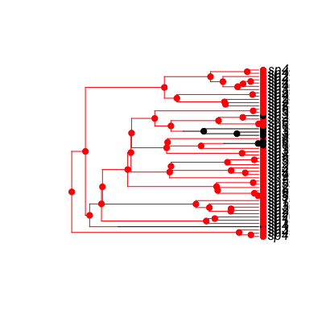

make.bisse(tree, states, unresolved=NULL, sampling.f=NULL, nt.extra=10, strict=TRUE, control=list()) starting.point.bisse(tree, q.div=5, yule=FALSE)
ape “phylo” format.NA if the state is unknown. This vector must have
names that correspond to the tip labels in the phylogenetic tree
(tree$tip.label). For tips
corresponding to unresolved clades, the state should be NA.c(0.5, 0.75) means that half of species in state 0
and three quarters of species in state 1 are included in the
phylogeny. By default all species are assumed to be known.states vector is always checked to make sure
that the values are 0 and 1 only. If strict is TRUE
(the default), then the additional check is made that every
state is present. The likelihood models tend to be poorly behaved
where states are missing.Prepare to run BiSSE (Binary State Speciation and Extinction) on a phylogenetic tree and character distribution. This function creates a likelihood function that can be used in maximum likelihood or Bayesian inference.
make.bisse returns a function of class bisse. This
function has argument list (and default values)
f(pars, condition.surv=TRUE, root=ROOT.OBS, root.p=NULL,
intermediates=FALSE)
The arguments are interpreted as
pars A vector of six parameters, in the order
lambda0, lambda1, mu0, mu1,
q01, q10.
condition.surv (logical): should the likelihood
calculation condition on survival of two lineages and the speciation
event subtending them? This is done by default, following Nee et
al. 1994.
root: Behaviour at the root (see Maddison et al. 2007,
FitzJohn et al. 2009). The possible options are
ROOT.FLAT: A flat prior, weighting
D0 and D1 equally.
ROOT.EQUI: Use the equilibrium distribution
of the model, as described in Maddison et al. (2007).
ROOT.OBS: Weight D0 and
D1 by their relative probability of observing the
data, following FitzJohn et al. 2009:
D = D0 * D0/(D0 + D1) + D1 * D1/(D0 + D1)
ROOT.GIVEN: Root will be in state 0
with probability root.p[1], and in state 1 with
probability root.p[2].
ROOT.BOTH: Don't do anything at the root,
and return both values. (Note that this will not give you a
likelihood!).
root.p: Root weightings for use when
root=ROOT.GIVEN. sum(root.p) should equal 1.
intermediates: Add intermediates to the returned value as
attributes:
cache: Cached tree traversal information.
intermediates: Mostly branch end information.
vals: Root D values.
At this point, you will have to poke about in the source for more information on these.
starting.point.bisse produces a heuristic starting point to
start from, based on the character-independent birth-death model. You
can probably do better than this; see the vignette, for example.
bisse.starting.point is the same code, but deprecated in favour
of starting.point.bisse - it will be removed in a future
version.
This must be a data.frame with at least the four columns
tip.label, giving the name of the tip to which the data
applies
Nc, giving the number of species in the clade
n0, n1, giving the number of species known to be
in state 0 and 1, respectively.
These columns may be in any order, and additional columns will be ignored. (Note that column names are case sensitive).
An alternative way of specifying unresolved clade information is to
use the function make.clade.tree to construct a tree
where tips that represent clades contain information about which
species are contained within the clades. With a clade.tree,
the unresolved object will be automatically constructed from
the state information in states. (In this case, states
must contain state information for the species contained within the
unresolved clades.)
The differential equations that define the
BiSSE model are solved numerically using ODE solvers from the GSL
library or deSolve's LSODA. The control argument to
make.bisse controls the behaviour of the integrator. This is a
list that may contain elements:
tol: Numerical tolerance used for the calculations.
The default value of 1e-8 should be a reasonable trade-off
between speed and accuracy. Do not expect too much more than this
from the abilities of most machines!
eps: A value that when the sum of the D values drops
below, the integration results will be discarded and the
integration will be attempted again (the second-chance integration
will divide a branch in two and try again, recursively until the
desired accuracy is reached). The default value of 0 will
only discard integration results when the parameters go negative.
However, for some problems more restrictive values (on the order
of control$tol) will give better stability.
backend: Select the solver. The three options here are
gslode: (the default). Use the GSL solvers, by
default a Runge Kutta Kash Carp stepper.
deSolve: Use the LSODA solver from the
deSolve package. This is quite a bit slower at the
moment.
deSolve is the only supported backend on Windows.
FitzJohn R.G., Maddison W.P., and Otto S.P. 2009. Estimating trait-dependent speciation and extinction rates from incompletely resolved phylogenies. Syst. Biol. 58:595-611.
Maddison W.P., Midford P.E., and Otto S.P. 2007. Estimating a binary character's effect on speciation and extinction. Syst. Biol. 56:701-710.
Nee S., May R.M., and Harvey P.H. 1994. The reconstructed evolutionary process. Philos. Trans. R. Soc. Lond. B Biol. Sci. 344:305-311.
pars <- c(0.1, 0.2, 0.03, 0.03, 0.01, 0.01) set.seed(4) phy <- tree.bisse(pars, max.t=30, x0=0) ## Here is the 52 species tree with the true character history coded. ## Red is state '1', which has twice the speciation rate of black (state ## '0'). h <- history.from.sim.discrete(phy, 0:1) plot(h, phy)
lik <- make.bisse(phy, phy$tip.state) lik(pars) # -159.71[1] -159.71## Heuristic guess at a starting point, based on the constant-rate ## birth-death model (uses \link{make.bd}). p <- starting.point.bisse(phy) ## Start an ML search from this point. This takes some time (~7s) fit <- find.mle(lik, p, method="subplex") logLik(fit) # -158.6875'log Lik.' -158.6875 (df=6)## The estimated parameters aren't too far away from the real ones, even ## with such a small tree rbind(real=pars, estimated=round(coef(fit), 2))lambda0 lambda1 mu0 mu1 q01 q10 real 0.10 0.20 0.03 0.03 0.01 0.01 estimated 0.14 0.18 0.12 0.04 0.00 0.02## Test a constrained model where the speciation rates are set equal ## (takes ~4s). ## <strong>Not run</strong>: # lik.l <- constrain(lik, lambda1 ~ lambda0) # fit.l <- find.mle(lik.l, p[-1], method="subplex") # logLik(fit.l) # -158.7357 # # ## Despite the difference in the estimated parameters, there is no # ## statistical support for this difference: # anova(fit, equal.lambda=fit.l) # ## <strong>End(Not run)</strong> ## Run an MCMC. Because we are fitting six parameters to a tree with ## only 50 species, priors will be needed. I will use an exponential ## prior with rate 1/(2r), where r is the character independent ## diversificiation rate: prior <- make.prior.exponential(1 / (2 * (p[1] - p[3]))) ## This takes quite a while to run, so is not run by default ## <strong>Not run</strong>: # tmp <- mcmc(lik, fit$par, nsteps=100, prior=prior, w=.1, print.every=0) # # w <- diff(sapply(tmp[2:7], range)) # samples <- mcmc(lik, fit$par, nsteps=1000, prior=prior, w=w, # print.every=100) # # ## See \link{profiles.plot} for more information on plotting these # ## profiles. # col <- c("blue", "red") # profiles.plot(samples[c("lambda0", "lambda1")], col.line=col, las=1, # xlab="Speciation rate", legend="topright") # ## <strong>End(Not run)</strong> ## BiSSE reduces to the birth-death model and Mk2 when diversification ## is state independent (i.e., lambda0 ~ lambda1 and mu0 ~ mu1). lik.mk2 <- make.mk2(phy, phy$tip.state) lik.bd <- make.bd(phy) ## 1. BiSSE / Birth-Death ## Set the q01 and q10 parameters to arbitrary numbers (need not be ## symmetric), and constrain the lambdas and mus to be the same for each ## state. The likelihood function now has just two parameters and ## will be proprtional to Nee's birth-death based likelihood: lik.bisse.bd <- constrain(lik, lambda1 ~ lambda0, mu1 ~ mu0, q01 ~ .01, q10 ~ .02) pars <- c(.1, .03) ## These differ by -167.3861 for both parameter sets: lik.bisse.bd(pars) - lik.bd(pars)[1] -167.3861lik.bisse.bd(2*pars) - lik.bd(2*pars)[1] -167.3861## 2. BiSSE / Mk2 ## Same idea as above: set all diversification parameters to arbitrary ## values (but symmetric this time): lik.bisse.mk2 <- constrain(lik, lambda0 ~ .1, lambda1 ~ .1, mu0 ~ .03, mu1 ~ .03) ## Differ by -150.4740 for both parameter sets. lik.bisse.mk2(pars) - lik.mk2(pars)[1] -150.474lik.bisse.mk2(2*pars) - lik.mk2(2*pars)[1] -150.474## 3. Sampled BiSSE / Birth-Death ## Pretend that the tree is only .6 sampled: lik.bd2 <- make.bd(phy, sampling.f=.6) lik.bisse2 <- make.bisse(phy, phy$tip.state, sampling.f=c(.6, .6)) lik.bisse2.bd <- constrain(lik.bisse2, lambda1 ~ lambda0, mu1 ~ mu0, q01 ~ .01, q10 ~ .01) ## Difference of -167.2876 lik.bisse2.bd(pars) - lik.bd2(pars)[1] -167.2876lik.bisse2.bd(2*pars) - lik.bd2(2*pars)[1] -167.2876## 4. Unresolved clade BiSSE / Birth-Death set.seed(1) unresolved <- data.frame(tip.label=I(sample(phy$tip.label, 5)), Nc=sample(2:10, 5), n0=0, n1=0) unresolved.bd <- structure(unresolved$Nc, names=unresolved$tip.label) lik.bisse3 <- make.bisse(phy, phy$tip.state, unresolved) lik.bisse3.bd <- constrain(lik.bisse3, lambda1 ~ lambda0, mu1 ~ mu0, q01 ~ .01, q10 ~ .01) lik.bd3 <- make.bd(phy, unresolved=unresolved.bd) ## Difference of -167.1523 lik.bisse3.bd(pars) - lik.bd3(pars)[1] -167.1523lik.bisse3.bd(pars*2) - lik.bd3(pars*2)[1] -167.1523